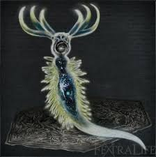
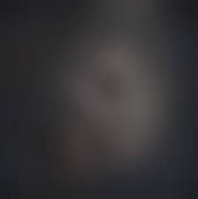
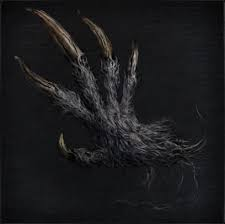
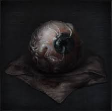
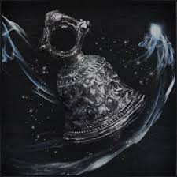
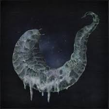
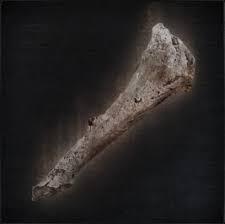
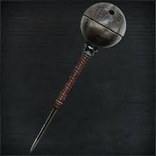

There are a total of 11 Spells giving Hunters eminence power to fight back the beasts of the night.


| Item Name | Description | |
|---|---|---|
|  | A Call Beyond | One of the secrets of the Choir. Long ago, the Healing Church used phantasms to reach a lofty plane of darkness, but failed to make contact with the outer reaches of the cosmos. The rite failed to achieve its intended purpose, but instead created a small exploding star, now a powerful part of the Choir's arsenal. At times, failure is the mother of invention. |
|  | Accursed Brew | Skull of a local from the violated fishing village. The inside of the skull was forcibly searched for eyes, as evidenced by innumerable scratches and indentations. No wonder the skull became stewed in curses. They who offer baneful chants. Weep with them, as one in trance. |
|  | Beast Roar | One of the forbidden hunter tools made by Irreverent Izzy. Borrow the strength of the terrible undead darkbeasts, if only for a moment, to blast surrounding foes back with the force of a roaring beast. The indescribable sound is broadcast with the caster's own vocal cords, which begs the question, what terrible things lurk deep within the frames of men? |
|  | Blacksky Eye | Soft eye blessed by a phantasm. They were discovered through Byrgenwerth's contact with the arcane, but in the end revealed nothing. Deep within the eye lies a vast stretch of dark sky that rumbles with an endless meteor storm. The slightest rub of the tiny orb, and the rock will tumble and soar. |
|  | Choir Bell | Special hunter tool of the Choir, high-ranking member of the church. Fashioned after a bell that projects an arcane sound across planes of existence. The sound of this smaller, silver version of the bell does not cross planes, but grants vigor and healing |
|  | Empty Phantasm Shell | Empty invertebrate shell that is said to be a familiar of a Great One. The Healing Church has discovered a great variety of invertebrates, or phantasms, as they are called. Shells with slime still harbour arcane power, and can be rubbed on weapons to imbue them with their strength. |
|
Executioner's Gloves | One of the secret treasures hidden in Cainhurst. The gloves of an executioner from a faraway land. Passed from executioner father to executioner son, these gloves can be used to summon wrathful spirits of the past by smearing them with blood. It is said that the nobles found in immeasurable delight in the dances of these vengeful specters. |
|
Madara’s Whistle | Whistle of the Madaras twins, denizens of the Forbidden Woods. The twins grew up alongside a poisonous snake, and developed a silent, inhuman kinship. The poisonous snake grew uncontrollably, raised on a healthy diet of beast entrails. Even after their deaths, it is said to respond to the call of the twins' whistle from within the Nightmare. |
|
Messenger’s Gift | A strange gift from the messengers, inhabitants of the dream who revere the brave hunters. Use to envelop oneself in a black nightmarish mist, then transform into a messenger. The illusion is a parlor trick, and any large movement will break the spell. To preserve the guise, proceed very slowly. |
|  | Old Hunter Bone | The bone of an old hunter whose name is lost. It is said that he was an apprentice to old Gehrman, and a practitioner of the art of Quickening, a technique particular to the first hunters. It is most appropriate that hunters, carriers of the torch who are sustained by the dream, would tease an old art from his remains. |
|  | Tiny Tonitrus | Tonitrus is a unique weapon crafted by Archibald, the infamous eccentric of the Healing Church workshop. This is a similar morning star mace that utilizes Quicksilver Bullets. When struck into the ground, it recreates the blue sparks that are said to surround the darkbeasts. Like Archibald's masterpiece, this too is a superb conductor of the powerful blue sparks. |